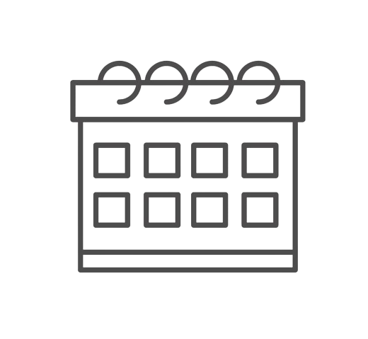

Calendário Letivo
Aulas se dão inicio a última semana de
Janeiro ou a primeira semana de
fevereiro; as aulas entram em recesso
antes de julho e voltam novamente na
primeira semana de agosto...
Algumas datas comemorativas como:
Carnaval, Helloween, Dia das
Mulheres, Dia do estudante e mais são
comemoradas na escola, semanas dos
cursos e mais!
Mais informações com o núcleo gestor, venha!